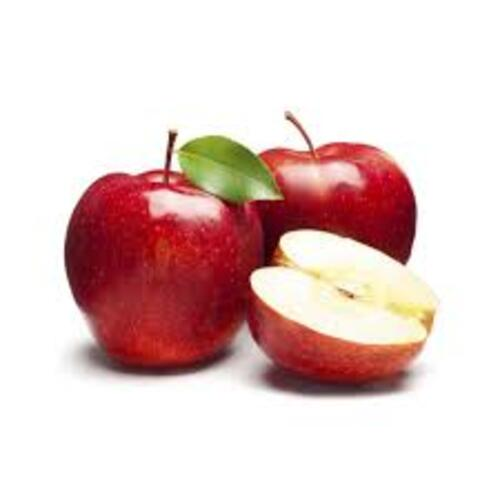
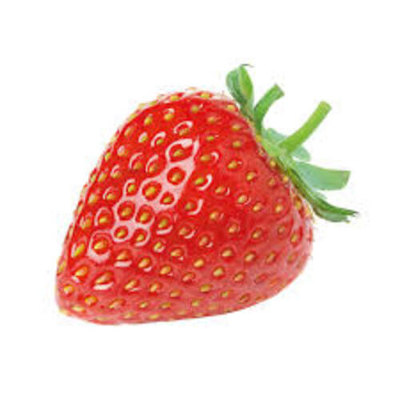

I am a psychology student with a strong interest in understanding human behavior, mental processes, and the ways people think, feel, and interact with the world around them. My academic journey in psychology has helped me develop a deeper appreciation for both the scientific and human sides of the field. I am especially interested in how psychological research can be used to better understand everyday experiences, support mental well-being, and improve communication, learning, and personal growth.
Through my coursework, I have explored a wide range of topics, including developmental psychology, cognitive psychology, abnormal psychology, social psychology, personality, research methods, and statistics. These areas have helped me build a strong foundation in psychological theory while also strengthening my ability to think critically, analyze information, and approach human behavior from multiple perspectives. I enjoy learning how research studies are designed, how data are interpreted, and how evidence-based knowledge can be applied in real-life settings.
As a psychology student, I am also interested in the connection between mental health and daily life. I believe that understanding psychology can help reduce stigma, encourage empathy, and make people more aware of the challenges others may face. My studies have made me more thoughtful about the importance of listening, cultural sensitivity, emotional awareness, and ethical responsibility when working with people. These values continue to shape the way I approach both academic work and personal interactions.
In addition to my academic interests, I am developing skills in communication, observation, research, writing, and problem-solving. I enjoy working on projects that require careful thinking, collaboration, and a balance between scientific evidence and human understanding. Whether I am reading research articles, writing papers, participating in class discussions, or learning about different areas of psychology, I try to stay curious and open-minded.
My goal is to continue growing as a student and future professional in the field of psychology. I hope to use my education to contribute to work that supports individuals, communities, and mental health awareness. I am still exploring the many possible paths within psychology, but I am especially drawn to areas where I can combine research, empathy, and practical support to make a positive difference in people’s lives.
• Studied topics such as human behavior, mental health, cognitive psychology, and social psychology
• Developed strong skills in research, writing, communication, and critical thinking
• Completed assignments and projects related to psychological theories and real-world applications
• Participated in club meetings, discussions, and events related to psychology and mental health
• Collaborated with other students to promote awareness of psychological topics
• Strengthened teamwork, leadership, and communication skills
• Assisted with community activities and supported event organization
• Communicated with different groups of people in a respectful and professional manner
• Gained experience in responsibility, empathy, and community service

